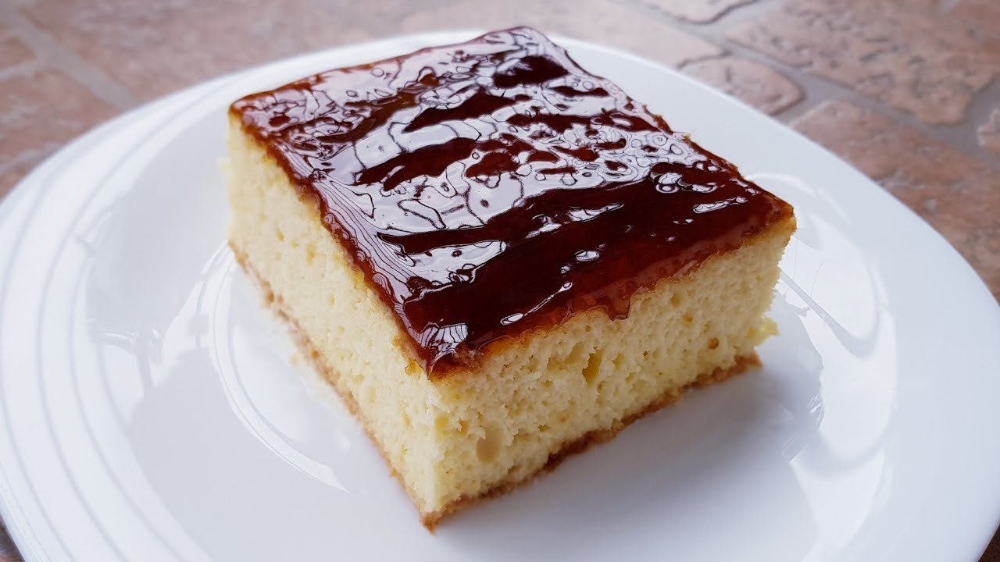

Kjo recetë e thjeshte për Trileçe do ju pëlqej pa masë. Pandispanja e butë e lagur me qumështin Lufra dhe duke shtuar ëmbëlsinë e qumështit të kondensuar, bashkuar me kremin karamel do të bëjë të çmendeni për këtë ëmbëlsirë.
Përgatitja e trileçe thjeshte me krem karamel ndahet ne tre faza. Në fillim përgatisim pandispanjen. Kombinimi i tre qumështeve dhe në fund kremi sipër dhe karameli.
Përgatitja e trileçes fillon me pandispanjën pasi duhet të ftohet më pas. Për të përgatitur pandispanjën fillimisht ndajmë të bardhat dhe të verdhat e vezëve. Rrahim të bardhën e vezës dhe shtojmë pak kripë, derisa të fillojë të shkumëzohet, shtojmë pak nga pak gjysmën e sheqerit dhe e trazojmë derisa të bëhet shkumë e plotë. Më pas rrahim të verdhat e vezëve dhe shtojmë pjesën tjetër të sheqerit, derisa të fillojë të zbardhet, shtojmë ujin gradualisht dhe e përziejmë derisa të fryhet mirë. Përziejmë miellin, vaniljen dhe fryrësin. Duke i situr i hedhim në enë dhe i përzierë me një shpatull. Përziejmë të bardhën e vezës me të verdhat nga poshtë lart me kujdes për të mos ulur shkumën. Masen e hedhim në tave me një letër kuzhine dhe e pjekim në furrë të parangrohur në 150 gradë për 40 minuta
Fillimisht hedhim qumështin Lufra të pasterizuar, 100% natyral dhe pa konservues pasi me këtë qumësht pandispanja del më e butë. Shtojmë me pas qumështin e kondensuar dhe në fund ajkën e qumështit,. I përziejmë derisa të jetë masë homogjene.l Pasi pandispanja të jetë pjekur dhe ftohur, e kthejmë në tepsi dhe heqim letrën e pjekjes. 3 qumështat i hedhim sipër pandispanjës dhe presim disa minuta derisa ta thithi. Nëse është e nevojshme e shpojmë me kunja dhëmbësh.
Me ndihmën e rrahëses rrahim ajkën e qumështit derisa të formohet krem. Kremin e shpërndajmë mbi pandispanjë, me ndihmën e një shpatulle kuzhine e përhapim në të gjithë sipërfaqen. Pasi kemi vendosur kremin sipër, trileçes i hedhim kremin karamel dhe e përhapim. E zbukurojmë me krem pana dhe nëse është e mundur e lemë në frigorifer për 1 ditë.